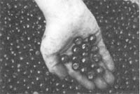
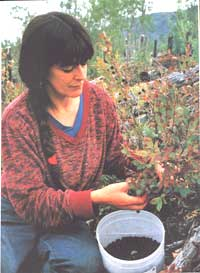
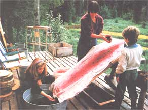
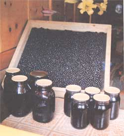
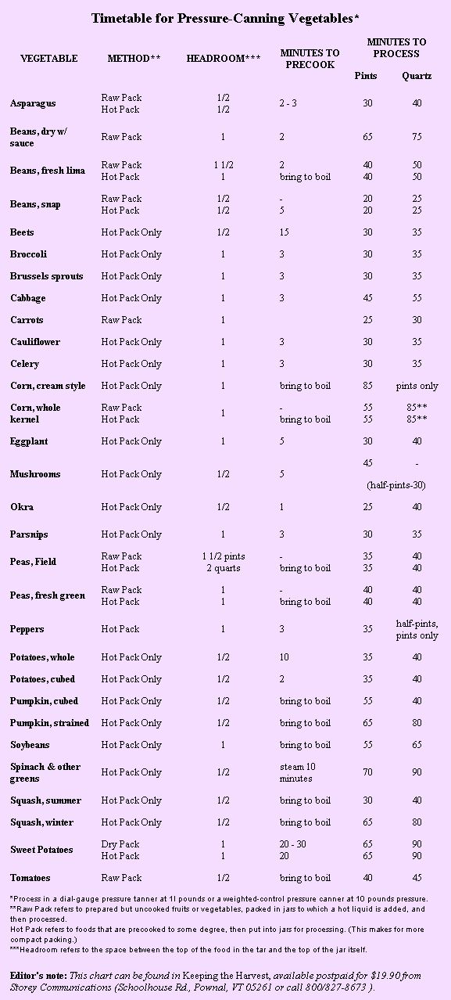

Huckleberry picking adventures in the B.C. mountains
"A lot of unexpected events take place up on Iskut burn; some good, some not so good..."
It was the bone-weary endofan intense dayofhuckleberry picking. Jay and I began harvesting the wild fruits at 10:30 a.m. By 5:30 p.m., we must have had about 100 pounds ofhuckleberries between us. The seatofmy beige pants bore the purple crestofthe seasoned picker, and with 40 poundsof produce on my back, I began to trudge towards the truck, negotiating a networkofsilver logs that overrode the rises and foldsof the huge patch. In my haste to cross the last log, I tripped over my own feet and screamed as the weight ofmyself (plus the berries) landed on my right leg. Down the hill I rolled, bucket on my back. When I stopped, I had this one thought - I positively could not bear to start the picking process all over again. But thanks to a tight-fitting lid, I didn't lose my bounty in the tumble. After the 20-mile ride home, I managed to hobble down the three-mile trail to our house, and poor Jay was stuck packing all ofthe huckleberries. Just another day of berry picking. . .
For the past 11 years, my family and I - determined to eat as much locally grown food as possible - have been making annual excursions to gather our main winter fruit. Huckleberries are not only delicious, they're completely organic and free for the taking; and with wilderness all around, there isn't much chance of chemical drift from industrial areas or non-organic agriculture. The berry patch is incredible where we live; the Stewart-Cassiar highway threads right through it, and pickers come from many miles to camp out and harvest the crop. It's called the Iskut burn. There's a good reason for this name. Thirty-four years ago, lightning struck the area and started a forest fire just 20 miles north of our homestead. I clearly remember arriving in this region, working as a lookout attendant for the Forest Service. The peninsula of alpine country extended out into a massive gray sea - waves of trees which had been dead for nearly 20 years. Little did I know what wealth lay hidden at the base of that peninsula. The area is now a 100,000-acre berry patch. During my first visit to the patch, I was awestruck by the abundance of berries. My initial impulse was to run helter-skelter, grabbing berries greedily. It wasn't until sometime later that I realized the grape-size granddaddies usually grow at the base of certain semi-shaded slopes. So then I became a bit more selective in my picking technique. I learned that the biggest berries prosper on these slopes because the longlasting snow up there provides a lot of moisture to the bushes. Actually, I've learned quite a bit about huckleberries since then, including how to determine which berries are which.
Deciphering Berry Types
Approximately 200 of the shrubs which live in the cold mountainous areas of the world have been classified under the genus Vaccinium. About 20 species of these shrubs are native to Canada and northern United States, and you'll find them most often at elevations greater than 2,500 feet on the coast (4,000 feet in the interior). You should see the way that huckleberries paint an entire mountain red during the fall - what a breath-taking vision!
The shrubs, which are quite bushy, range in height from five feet at lower elevations to one foot near timberline. They are crooked plants with smooth limbs and slightly angled twigs. As for the leaves, they are pointed at both ends. They are also finely-toothed, and noticeably paler on the underside. The leaves range in their length from between 1/2" to 2". The berry that my family most often scouts out is the black mountain huckleberry, Vaccinium membranaceun, which many pickers consider the finest and tastiest of all. Vaccinium ovalifolium (also common to the area) is the tall, blue huckleberry which grows on bushes. Often these bushes reach four feet high. However, the blues aren't nearly as sweet as the blacks, and their seeds are much harder. Sometimes you'll also notice a gritty feeling (which many people dislike) when you cook the blues in your desserts. Still, the blues shouldn't get a bad rap; they are an important part of the scene since they provide cross-pollination for the blacks. As soon as the snow melts in May or June, single creamy flowers begin to appear on the bushes. By mid-August they are promptly succeeded by greenish berries that ripen to a deep-purplish black. Other species bear a paler, more bluish bloom. These sweet, round globes range from pea size to grape size and average about a half inch in diameter. I, myself, find it's worth being patient and bringing in only the grape-size ones. By the way, you may notice that huckleberries are extremely popular among birds and bears. I can tell you that I've seen plenty of signs of the latter (although, luckily, we've never chanced upon a bear feasting in the same patch). Dogs, wolves, coyotes, and foxes enjoy huckleberries as much as we do - and what a ridiculous sight to see them daintily nibbling berries right off the bushes!
Family trips to huckleberry heaven are often nourishing in themselves. With each passing year, our daughter, Natalia, and our son, Ben, help more with the berry harvesting. Although their first priority has always been filling their "stomach buckets" (as they like to call it), once they fill up, you can count on them to pick and haul home the perfect berries.
I've decided that the berry-gathering process is addictive. How can you stop picking when the berries just seem to go on forever? I know that some pickers prefer using rake-type tools to comb the berries off their shrubs, but I find nimble fingers are the most efficient tools. Even though picking is a family effort, secretly we all search for the giant berry - that "king berry" that will exceed all others in size and sweetness. After five or six hours of steady work, I usually enter a trance state, and my fingers just go on picking without the presence of my mind. Then, later in the season (after frost has struck), harvesting is even easier - you can virtually tickle the berries right off the bushes. The longer those huckleberries hang, the sweeter they become. Berry Delicious Creations After you lug your berries home, you should clean them right away. Here's the best way to clean a lot at once: Roll your berries down a wide sloping board (covered with cloth) into a small basin or tub. If you line the edges of the board with strips of wood, it'll prevent the berries from bouncing off the sides. You'll have to experiment with the angle of the board - it needs to be steep enough for the berries to roll into the tub without the debris tumbling down along with it. At just the right slope, the cloth will snare the leaves and twigs while the berries keep on rolling. Once in a while, brush or shake the cloth off.
Although the easiest way to eat huckleberries is straight off the bush, there are a number of other options. I guess I should start with drying, as this is the most nutritionally-sound way to preserve the berries. We do this by covering our racks above the wood cookstove with them, turning them frequently as they lose their moisture. If the weather is bright, we'll put the drying racks right out on the front porch during the day (we bring them back in before the sun goes down). The end product is a tasty concentrated fruit reminiscent of currants. I use these in Christmas cakes, in porridge, and anywhere else I think they will add a pleasing taste. They can also be reconstituted and used in pies and other desserts. One thing I always like to do is can some berries in a light sugar syrup for winter fruit. To do this, I fill sterilized jars with fresh berries, pour the boiling syrup over them (leaving a half inch of head space). After wiping the rims, I place the snap lids and rings firmly on them, and then process them in a boiling water bath for 20 minutes. You should always save a bunch of berries so you can make all kinds of treats later. For one thing, you can transform them into jam and jelly - I use about six cups of berries to four cups of sugar, and cook it a bit longer to ensure that it will stiffen. (Batches that turn out soft can always be used as pancake syrup.) The pulp from jelly-making can be spread on a drying rack and used for tea. Huckleberries also make great wine and juice, and because they freeze well, they make a delicious addition to homemade ice cream.
A lot of unexpected events take place up there on Iskut burn; some good, some not so good. One of our more pleasant surprises was meeting Doctor Lindstrom. Our daughter - who was one-year-old at the time - was busy picking berries out of the bucket, feeding Jay and me alternately. Suddenly a man appeared over the hill, taking us all by surprise. At first, I thought he was an apparition; he resembled an aged Huck Finn, with a long gray beard and hair, mauve hands, and eyes as bright as blueberries. He strode towards us, greeting us with his purple smile. I'm sure the grins that we returned equally matched his in color. It turned out that this man, Dr. Lindstrom, was originally from Oregon, but now lived near Hazelton, B.C. He was very much a naturalist and an advocate of the simple life - he canned his huckleberries without any sugar (which he referred to as "white death"). Although I am not as avid a purist, I do limit my own sugar intake, and appreciated his comment. Anyway, our talks of huckleberries led to several other conversations, and it turns out that this man from the patch became a good friend. So began a lively correspondence that took us through the long winter months.
I remember one frightful picking experience in particular: It was a few days after I tripped with all those berries and hurt my leg that the Thunderstorm family (good friends of ours) came to visit. My injury kept me at home with the younger members, who wished to remain behind because of the rainy weather. Jay and the others drove north to the huckleberry patch for several hours, and when they returned, Lynne was aghast to tell me they'd forgotten our little terrier, Spooky, who had accompanied them to the berry patch. I guess that our scruffy dog had been dancing around the mountain and when it was time to go home, the group had clambered into the truck without her. Miles later, they realized they had left Spooky behind. She was somewhere in the hills of B.C. and we had no way of finding her. If you have a pet of your own, you can imagine the scare this gave me. I telephoned my family down at Shuswap Lake, 1,000 miles south, to tell them the bad news. I had originally gotten the lively, little terrier from my sister Donna's boss, and I was sure she would be horrified when she heard the bad news. But on the contrary, Donna didn't seem upset in the slightest. What happened was - thanks to the presence of a veterinarian clinic tag tied around Spooky's neck - she had been found. Donna informed me that she'd been contacted by a nice man named Walter, in Lower Post. Walter's family had picked Spooky up somewhere in the berry patch and had tried their best to locate the owner. Well, I contacted him immediately, and it turned out that for the past 10 days our dog had been vacationing with Walter (and family) in Lower Post, a tiny settlement near the Yukon border. He was no less than 400 miles north of home! A few days later Walter's wife phoned and arranged to meet us in the Iskut burn, where they would return our Spooky. They told us to be on the lookout for a blue Dakota pickup. When I inquired after Spooky's health, I got the clear impression that she was fat and pampered. I can tell you for certain that she was. When Natalia and I drove north to the Iskut burn with some friends, it didn't take long to locate the blue pickup and the black terrier tied to the bumper. The kind, native family was busy gathering huckleberries. As soon as Spooky heard her real name, she started whining. I must say she looked pretty happy to see us. We thanked the family from Lower Post and rattled on home. What a relief that we got her back. Maybe it wasn't such a bad experience after all.
|
Ripe for Picking:Huckleberries are not only delicious, they're completely organic and free for the taking. Nothing adds better flavor to yogurt or desserts. |
 An Important Step:After lugging your berries home, you should clean them right away. Using a cloth will help to snare the leaves and twigs from your berry bounty. |
 |
|
 |
 |
 |